Détails des projets
- Stage Automaticien — Cofidur EMS
- Pilotage d’un bras robot industriel KUKA
- Automatisme industriel avec TIA Portal (Siemens S7-1200)
- Automatisme industriel avec Control Expert (Schneider)
- Conception d’un moteur V6 sous Siemens NX
- Asservissement & régulation — MATLAB/Simulink (cuve + moteur)
- Robot mobile autonome — Arduino
- Robot LIMO — ROS2
- FPGA — Chronomètre
- LabVIEW
- Carte électronique
- Traitement d’images — Contrôle qualité non distructif
Stage Automaticien – Cofidur EMS
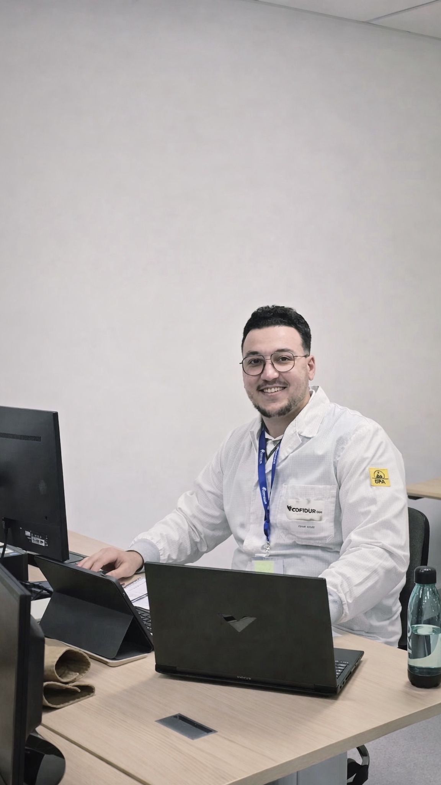
Dans le cadre de mon stage chez Cofidur EMS, une entreprise spécialisée en sous-traitance électronique pour des acteurs majeurs tels que Airbus, Safran, Thales et Boeing, j’ai participé à la mise en œuvre d’un projet industriel portant sur la mise en place d’un système de contrôle par vision automatique. En tant que stagiaire automaticien, j’ai contribué au développement d’une solution de contrôle qualité automatisé utilisant une caméra industrielle Keyence IV4-600CA. L’objectif était d’assurer un contrôle fiable, rapide et reproductible des pièces en production, tout en réduisant les erreurs humaines. J’ai participé à l’analyse fonctionnelle du besoin, à la définition des critères de détection (présence, position, conformité), ainsi qu’au paramétrage de la caméra de vision. J’ai également contribué à l’intégration du système dans l’environnement industriel, en assurant la communication avec les équipements et la remontée des résultats de contrôle. Le système permet un contrôle en temps réel avec détection automatique des défauts, génération de résultats (OK/NOK) et transmission des données vers un système de supervision. Une attention particulière a été portée à la robustesse, à la fiabilité et à l’adaptation aux contraintes industrielles. Ce projet m’a permis de développer des compétences en vision industrielle, en automatisme et en intégration de systèmes industriels réels, dans un environnement exigeant en lien avec les standards de l’industrie aéronautique.
Pilotage d’un bras robot industriel KUKA
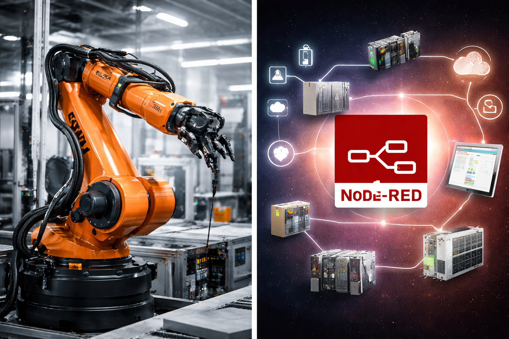
J’ai réalisé le pilotage d’un bras robot industriel KUKA dans le cadre d’un système automatisé, en mettant en œuvre des stratégies de contrôle adaptées aux exigences de précision, de répétabilité et de sécurité. Le projet a débuté par une analyse fonctionnelle du système robotisé, permettant de définir les contraintes de mouvement, les trajectoires à suivre et les interactions avec l’environnement. J’ai ensuite programmé le robot afin d’assurer le pilotage des axes, la gestion des trajectoires cartésiennes et articulaires, ainsi que l’exécution de séquences automatisées. Une attention particulière a été portée à la gestion des états du robot, à la synchronisation des actions et à la sécurisation des mouvements. En parallèle, j’ai développé une communication industrielle avec Node-RED, permettant l’échange de données en temps réel entre le robot et un système de supervision. Cette interface a permis le pilotage à distance, l’envoi de commandes, la récupération des états du robot ainsi que la visualisation des informations de fonctionnement. L’intégration de Node-RED a également permis de mettre en place une architecture de communication flexible, facilitant l’interfaçage avec d’autres équipements industriels et ouvrant la voie à des applications de type industrie 4.0. Enfin, des phases de tests, validation et mise au point ont été réalisées afin de garantir la fiabilité du système, la précision des mouvements et la robustesse du pilotage en conditions réelles.
Automatisme industriel avec TIA Portal (Siemens S7-1200)

J’ai réalisé un projet d’automatisme industriel sous TIA Portal reposant sur la programmation d’un automate Siemens S7-1200 et l’utilisation d’une IHM Siemens pour la supervision du procédé. L’objectif principal était de concevoir une solution capable d’assurer le pilotage, la commande et la surveillance d’un système automatisé didactique intégrant différents actionneurs et capteurs. Le projet a débuté par une analyse fonctionnelle du système, afin d’identifier les différentes étapes de fonctionnement, les conditions de transition, les sécurités à mettre en place ainsi que les interactions entre les entrées/sorties de l’automate. J’ai ensuite développé la logique de commande du système dans TIA Portal, en structurant le programme autour des séquences de fonctionnement, de la gestion des états, des conditions de démarrage et d’arrêt, ainsi que des mécanismes de sécurité nécessaires au bon déroulement du cycle. En parallèle, j’ai conçu une interface homme-machine (IHM) permettant le pilotage du système, la sélection des commandes, l’affichage des états de fonctionnement et la visualisation des informations utiles à l’exploitation. Cette interface facilite l’utilisation du procédé en offrant une supervision simple, claire et ergonomique, tout en améliorant la lecture du comportement global du système. Ce projet m’a permis de travailler sur plusieurs aspects essentiels de l’automatisme industriel : configuration de l’API Siemens S7-1200, affectation des entrées/sorties, élaboration de la logique séquentielle, structuration du programme, communication avec l’IHM, tests de fonctionnement et validation du cycle automatisé. J’ai également réalisé des phases de mise au point pour vérifier la cohérence des séquences, la réactivité du système, la fiabilité du pilotage et le bon enchaînement des opérations. Enfin, ce travail m’a permis de renforcer mes compétences en programmation d’automates industriels, en supervision de procédés et en intégration d’une architecture automatisée complète, depuis l’analyse du besoin jusqu’aux essais finaux sur système réel.
Automatisme industriel avec Control Expert (Schneider)
J’ai réalisé un projet d’automatisme industriel avec Control Expert (Schneider Electric) basé sur la programmation d’un automate programmable industriel (API) dans un environnement de contrôle temps réel. L’objectif principal était de concevoir et mettre en œuvre une solution automatisée capable d’assurer le pilotage fiable et sécurisé d’un système industriel intégrant différents capteurs et actionneurs. Le projet a débuté par une analyse fonctionnelle du système, permettant d’identifier les différentes étapes du cycle de fonctionnement, les conditions de transition, ainsi que les contraintes de sécurité et de performance. J’ai ensuite développé la logique de commande sous Control Expert, en structurant le programme autour de séquences automatisées, de la gestion des états et de la coordination des actions. J’ai mis en œuvre des langages de programmation industriels adaptés (logique séquentielle, blocs fonctionnels), afin d’assurer un fonctionnement robuste et évolutif du système. Une attention particulière a été portée à la gestion des entrées/sorties, à la fiabilité des échanges de données ainsi qu’à la mise en place de mécanismes de sécurité garantissant le bon déroulement du processus. En complément, j’ai participé aux phases de tests, validation et mise au point du programme, en vérifiant la cohérence des séquences, la réactivité du système et la stabilité du fonctionnement en conditions réelles. Ce travail m’a permis de renforcer mes compétences en programmation d’automates Schneider, en architecture de systèmes automatisés et en mise en service de solutions industrielles. Enfin, ce projet s’inscrit dans une démarche d’automatisation industrielle moderne, avec une approche orientée fiabilité, modularité et performance.
Conception d’un moteur V6 sous Siemens NX
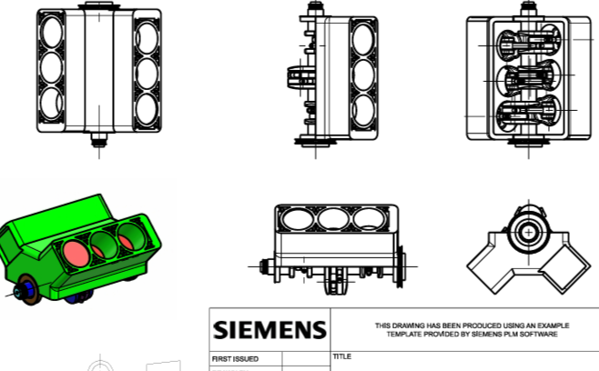
J’ai réalisé la conception d’un moteur V6 sous Siemens NX en modélisant l’ensemble des pièces mécaniques nécessaires à la construction de l’assemblage. Le projet consistait à créer chaque composant avec les bonnes dimensions, les formes adaptées et les interfaces géométriques nécessaires, afin d’obtenir un assemblage cohérent et fonctionnel. J’ai ainsi conçu les différentes pièces en tenant compte des contraintes d’encombrement, d’alignement et de liaison mécanique, avec une attention particulière portée à la précision des cotes et à la compatibilité entre les composants. L’objectif était de garantir une intégration correcte de chaque pièce dans l’ensemble moteur, tout en respectant la logique mécanique de l’architecture V6. Ce projet m’a permis de mettre en pratique les outils de modélisation 3D sur Siemens NX, de travailler sur la création de pièces mécaniques, sur leur mise en assemblage et sur la vérification de la cohérence globale du système. Il m’a également permis de développer ma rigueur en conception mécanique assistée par ordinateur, ainsi que mes compétences en gestion d’assemblages complexes et en organisation de projet CAO.
Asservissement et régulation sous MATLAB/Simulink
Régulation du niveau d’eau d’une cuve

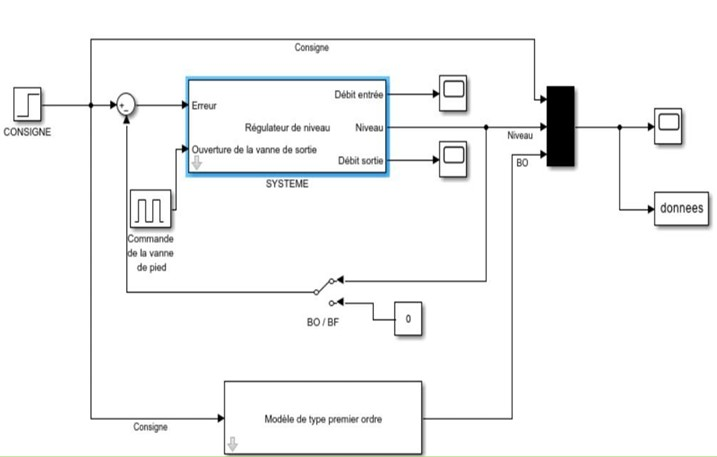

Dans ce travail, j’ai suivi une démarche structurée en automatique : modélisation du procédé à partir des lois physiques, validation du comportement sous Simulink en boucle ouverte, puis mise en place d’une loi de commande proportionnelle. Le réglage a été effectué à partir d’un objectif de précision en régime permanent, avant d’être ajusté et validé en boucle fermée. Une analyse de sensibilité m’a permis d’identifier les paramètres les plus influents sur la stabilité et la performance du système.
Régulation de la vitesse d’un servomoteur à courant continu RS640E
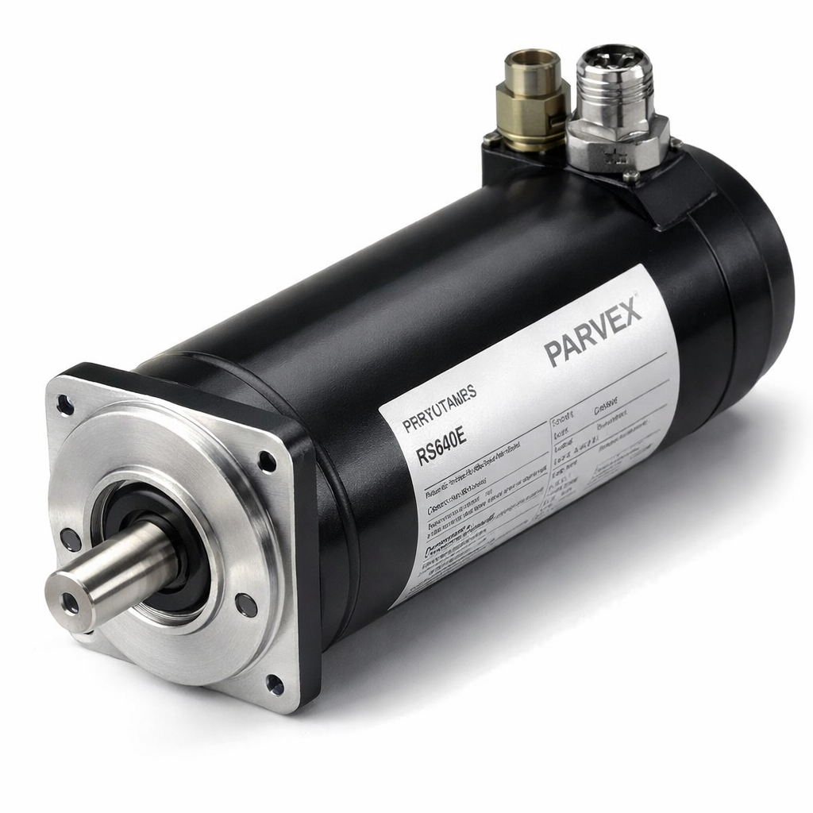
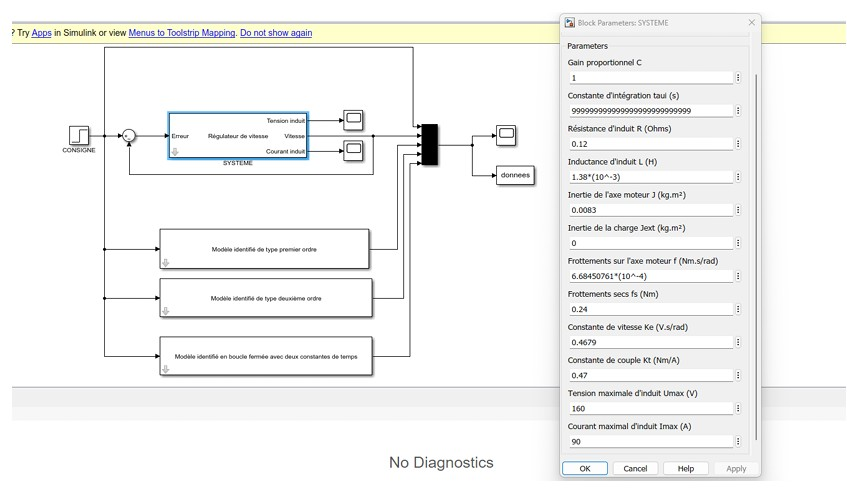
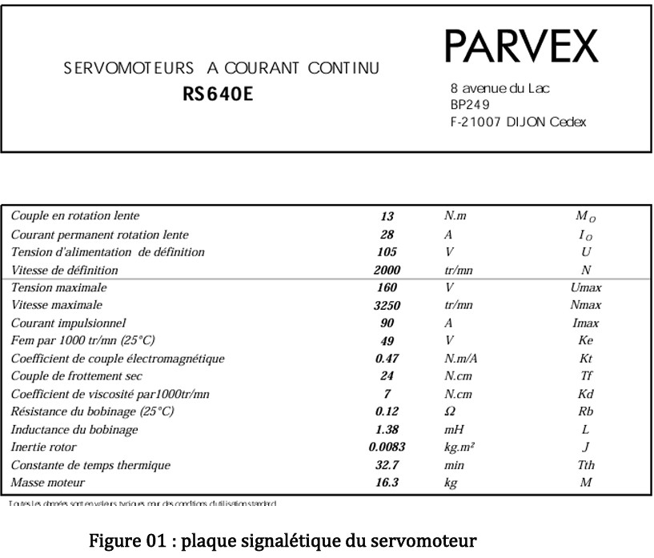
Ce projet repose sur le paramétrage et la modélisation du moteur à partir de données constructeur, suivis d’une analyse dynamique en boucle ouverte à vide puis en charge. Sur cette base, j’ai conçu et réglé un correcteur PI afin de répondre à des critères de performance (rapidité, stabilité, absence d’erreur statique). Différents réglages ont été comparés afin d’étudier le compromis entre rapidité et robustesse, et de valider un comportement cohérent avec les contraintes réelles du système.
Robot mobile autonome – Arduino


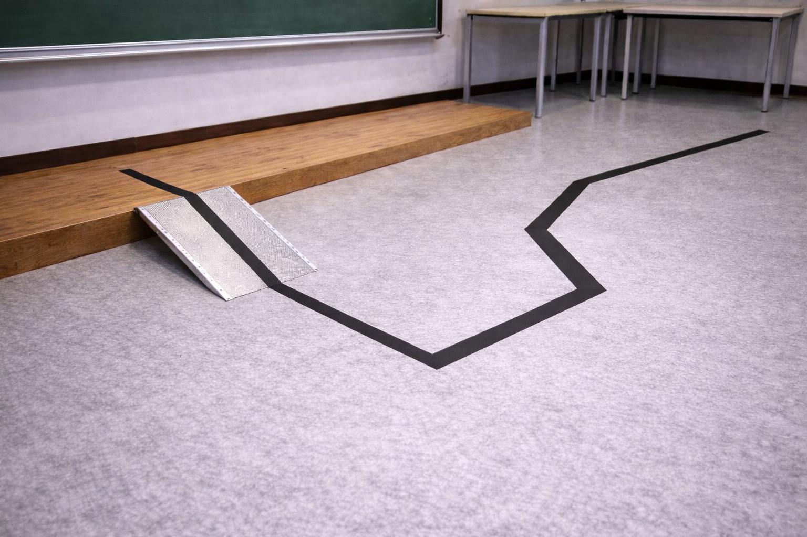
Dans le cadre de ce projet, j’ai commencé par analyser le cahier des charges,
qui définissait les objectifs fonctionnels du robot et les contraintes de déplacement.
J’ai ensuite réalisé le montage mécanique du robot, comprenant le
vissage et l’assemblage des composants (châssis, roues, moteurs),
ainsi que le câblage électrique avec le raccordement des fils,
de l’alimentation et des actionneurs. Une vérification complète des connexions a été effectuée
afin de valider le bon fonctionnement de l’ensemble.
Après validation du montage, je suis passée à la programmation sur Arduino.
L’objectif était de permettre au robot de suivre une trajectoire imposée,
comprenant la descente d’une pente puis l’exécution d’un
virage à droite d’environ 45°, tout en maintenant un déplacement stable.
Afin d’améliorer la précision et la robustesse du système, j’ai mis en place un
correcteur PI pour la régulation de la vitesse des moteurs.
Ce correcteur permet de compenser les différences entre les roues,
les irrégularités du sol ainsi que les variations dues aux frottements,
et ainsi de limiter les écarts de trajectoire.
Pour rendre le fonctionnement du robot plus lisible, j’ai également intégré un
système de signalisation par LEDs :
une LED verte indique le mode de déplacement normal,
une LED rouge signale les phases de virage,
et une LED jaune correspond à un état intermédiaire ou de transition.
Enfin, j’ai réalisé une phase de tests expérimentaux basée sur des
essais successifs et des ajustements progressifs des paramètres,
jusqu’à obtenir une trajectoire stable, fiable et conforme au cahier des charges.
Robot LIMO sous ROS2


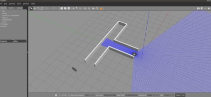
Dans ce projet, j’ai travaillé sur le robot mobile LIMO en utilisant ROS2 et une simulation sous Gazebo. L’objectif était de concevoir une solution de contrôle avec deux modes de fonctionnement et une logique de sécurité fiable.
Le robot devait fonctionner selon deux modes :
- Mode manuel : commande via joystick, activée par un appui sur R1. J’ai implémenté la gestion des commandes (vitesse linéaire et angulaire) pour piloter le robot de façon stable.
- Mode autonome : activé par un appui sur R2, avec un comportement permettant au robot de sortir d’un labyrinthe en appliquant une stratégie de suivi du mur gauche. L’algorithme ajuste la trajectoire en fonction des distances mesurées et maintient une progression cohérente vers la sortie.
J’ai intégré une procédure de sécurité basée sur la détection d’obstacles :
- Si un mur est détecté à moins de 30 cm en face : interdiction d’avancer (blocage de la commande avant).
- Si un mur est détecté à moins de 50 cm en face : recul contrôlé avec une vitesse de -0.2.
Pour respecter la consigne pédagogique et mettre en avant ROS2, j’ai structuré le projet en plusieurs nœuds (capteurs/perception, décision, commande), chacun avec un comportement simple, puis j’ai orchestré l’ensemble via des fichiers launch. Cette approche m’a permis de produire une solution modulaire, lisible, et facile à faire évoluer.
Projet FPGA – Chronomètre

Dans ce projet, j’ai développé un chronomètre numérique sur FPGA en utilisant Quartus et le langage VHDL. L’objectif était de concevoir une architecture fiable, structurée et adaptée à une logique matérielle temps réel.
J’ai commencé par créer les briques de base : diviseur d’horloge (pour obtenir une base de temps stable), compteurs (unités/dizaines), registres pour mémoriser les états, et une logique de contrôle pour gérer les commandes (start/stop/reset selon la consigne).
Chaque module a été développé et vérifié avant l’assemblage final. J’ai ensuite réalisé l’intégration hiérarchique de l’ensemble afin d’obtenir un système complet. Ce projet m’a permis de renforcer mes compétences en conception logique, structuration en blocs et validation fonctionnelle sous Quartus.
Application LabVIEW
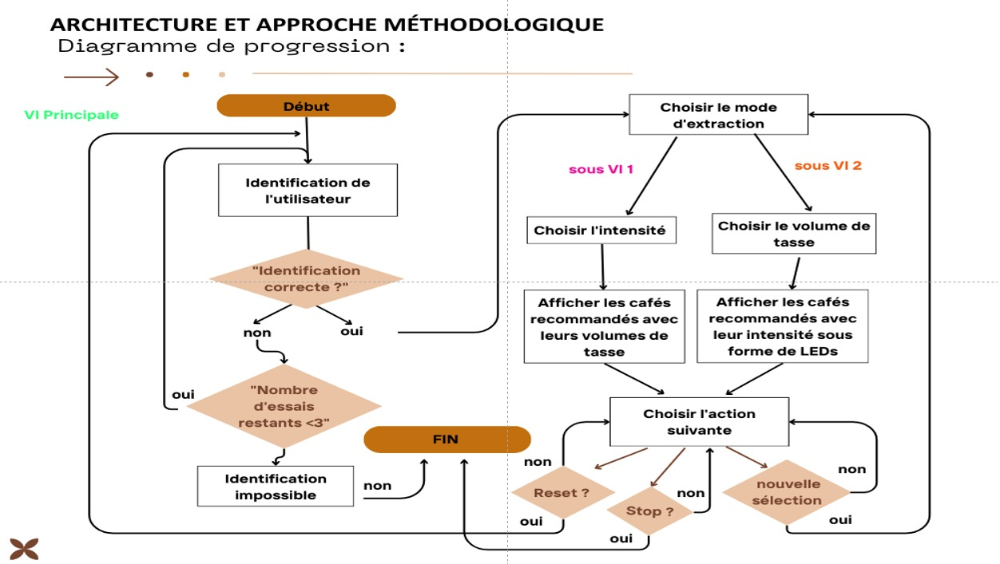
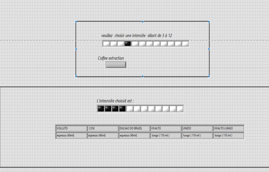
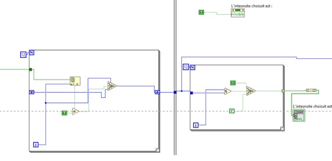
Dans ce projet, j’ai développé une application LabVIEW orientée “expérience utilisateur” pour une marque de dosettes, afin de permettre aux clients de choisir un café en fonction de l’intensité (3 à 12) ou du volume de la tasse (Ristretto, Expresso, Largo).
J’ai structuré le programme autour d’un VI principal et de sous-VIs :
- Extraction par intensité : sélection via des cases à cocher (nomenclature imposée), puis affichage des cafés compatibles sous forme de tableau (noms + volumes recommandés).
- Extraction par volume : sélection via un menu déroulant, puis affichage des cafés compatibles, avec représentation de l’intensité via un réseau de LEDs (noires/blanches) conforme au cahier des charges.
J’ai également implémenté la partie authentification dans le VI principal : saisie d’un identifiant + mot de passe, gestion de 3 essais maximum, messages utilisateurs, et activation conditionnelle de l’interface de sélection uniquement si l’identification est réussie. Enfin, j’ai ajouté une logique de fin de cycle avec les boutons New selection, Reset et Stop program, pour une application cohérente et exploitable.
Conception de carte électronique
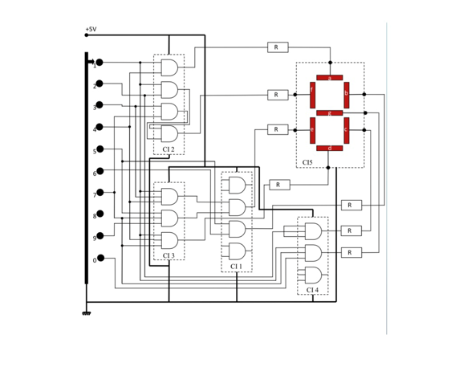
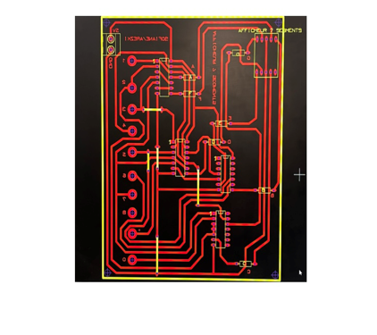
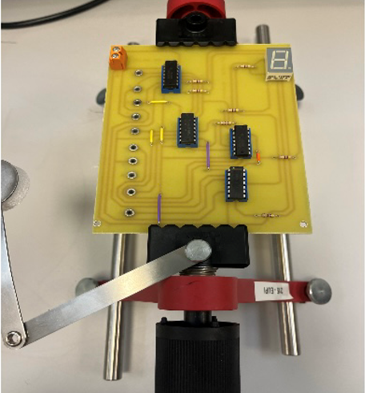
J’ai réalisé une carte électronique dédiée à l’affichage numérique sur afficheur 7 segments via une interface TCI .
Le projet a commencé par l’analyse du besoin et la définition des fonctionnalités attendues (mode d’affichage, contraintes d’alimentation, type d’interface). J’ai ensuite conçu le schéma électronique en sélectionnant les composants adaptés (afficheur, drivers/résistances, connectique et alimentation) puis validé les choix par des vérifications de cohérence électrique. Après cette phase de conception, j’ai procédé au câblage et à l’assemblage de la carte, en veillant au respect du routage, à la qualité des soudures et à la fiabilité des connexions. J’ai ensuite développé la partie logicielle pour piloter l’afficheur et gérer la communication via l’interface TCI, avec une mise au point progressive (tests unitaires des segments, puis affichage complet). Enfin, j’ai réalisé une campagne de tests fonctionnels (validation de l’affichage, stabilité, erreurs de communication, consommation) et corrigé les anomalies jusqu’à obtenir un fonctionnement robuste et conforme aux spécifications
Conception d'une unité de dilution gazeuse
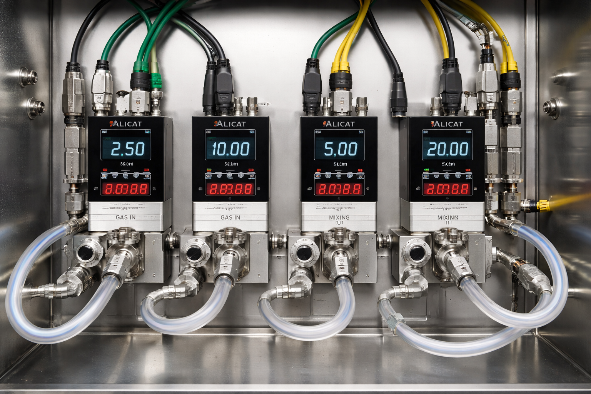
J’ai réalisé et piloté une unité complète de dilution gazeuse reposant sur l’intégration de quatre régulateurs et débitmètres massiques analogiques . Le projet a débuté par l’analyse fonctionnelle du système et la définition des exigences de précision, de stabilité et de sécurité des mélanges gazeux. J’ai ensuite participé à l’architecture globale de l’installation, incluant le choix et le paramétrage des instruments, leur interconnexion et la gestion des signaux analogiques. J’ai développé sous LabVIEW une interface de supervision dédiée, permettant le pilotage des régulateurs, le réglage dynamique des consignes de débit, la visualisation en temps réel des données mesurées et l’enregistrement des paramètres pour l’analyse et la traçabilité. En parallèle, j’ai conçu et implémenté la logique de commande assurant la synchronisation des débitmètres, le calcul des rapports de dilution, la gestion des états de fonctionnement et la détection d’anomalies. Enfin, j’ai réalisé des phases de tests et de validation afin de vérifier la fiabilité du système, la reproductibilité des mélanges et la robustesse du pilotage en conditions réelles d’utilisation.
Note : Je tiens à préciser que certains projets ont été menés en collaboration avec d’autres étudiants, dans un cadre académique.